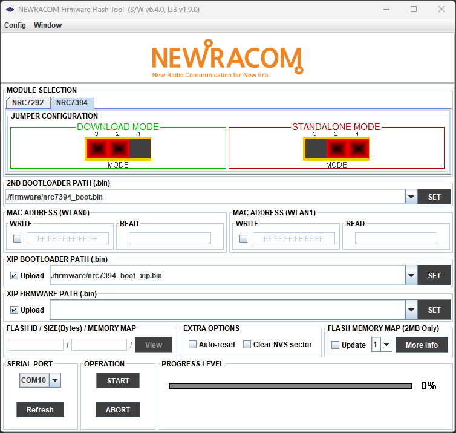
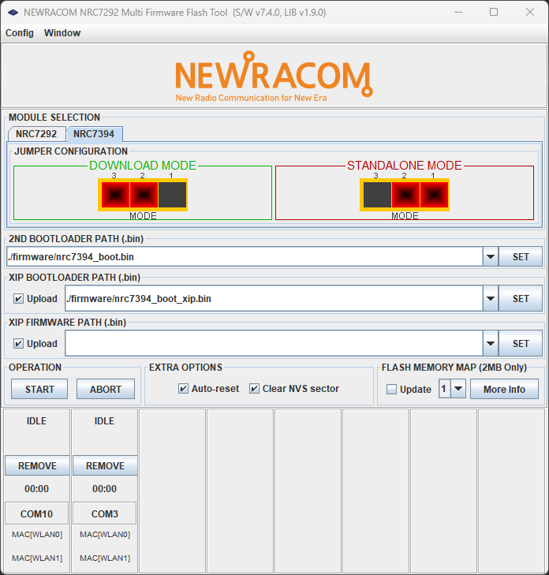

Tool Usage (Firmware Flash Tool)
Overview
Firmware Flash Tool is a GUI utility for executing flash-related operations (e.g. reading/writing MAC addresses, flashing XIP standalone bootloader/firmware, identifying flash information, updating flash partitioning profile) on NRC7292/NRC7394 modules.

Tool Version
v6.4 (Default: FirmwareFlashTool.exe)
v7.4 (Multi Upload: MultiFirmwareFlashTool.exe)
Binary Files
Warning
Make sure that the correct 2nd bootloader, XIP bootloader and XIP firmware binaries corresponding to the module types (NRC7292 or NRC7394) are selected!
2nd Bootloader:
The 2nd bootloader binary file to be temporarily written on RAM to replace the mask ROM bootloader to augment the bootloader functionalities for the tool operation.
XIP Bootloader:
The XIP bootloader binary file to be stored on the flash memory. If the non-default 5s-wait XIP bootloader is uploaded on the module, the bootloader will wait for 5 seconds to handle firmware upload requests from the tool before jumping to the XIP firmware following a reset. This can be useful during the initial development phase for achieving a quick upload-test-debug cycle.
XIP Firmware:
The XIP firmware binary file to be stored on the flash memory.
Auto-reset:
An optional feature that triggers the bootloader to execute the uploaded XIP firmware following the upload procedure. This option is only valid with the non-default 5s-wait XIP bootloader operating in the standalone operation mode.
Clear NVS Sector:
Clears the NVS sector on the flash memory if selected.
Flash Memory Map (NRC7394/2MB Only):
Flash partitioning profiles to be written. (Default: 1)
Profile: (F/W / FOTA / User Data) [KBytes]
1: (968 / 968 / 8)
2: (972 / 972 / 0)
3: (1936 / 0 / 8)
4: (1944 / 0 / 0)
Operation
Set the DIP switch (for NRC7292) or jumper configuration (for NRC7394) to Download mode.
Select the desired procedures by using the GUI interface (e.g. MAC adresss write, XIP bootloader write, and XIP firmware write).
Reset the board, and press the START button to execute the selected procedures.
Multi Firmware Flash Tool
Multi Firmware Flash Tool is a variant of the Firmware Flash Tool that allows concurrent uploads.
